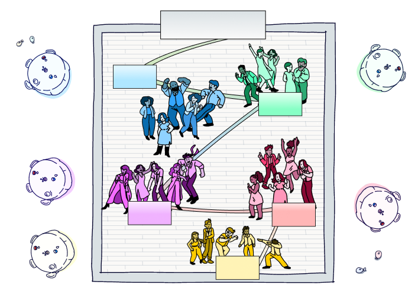
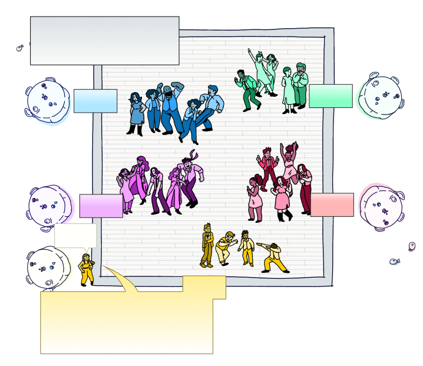
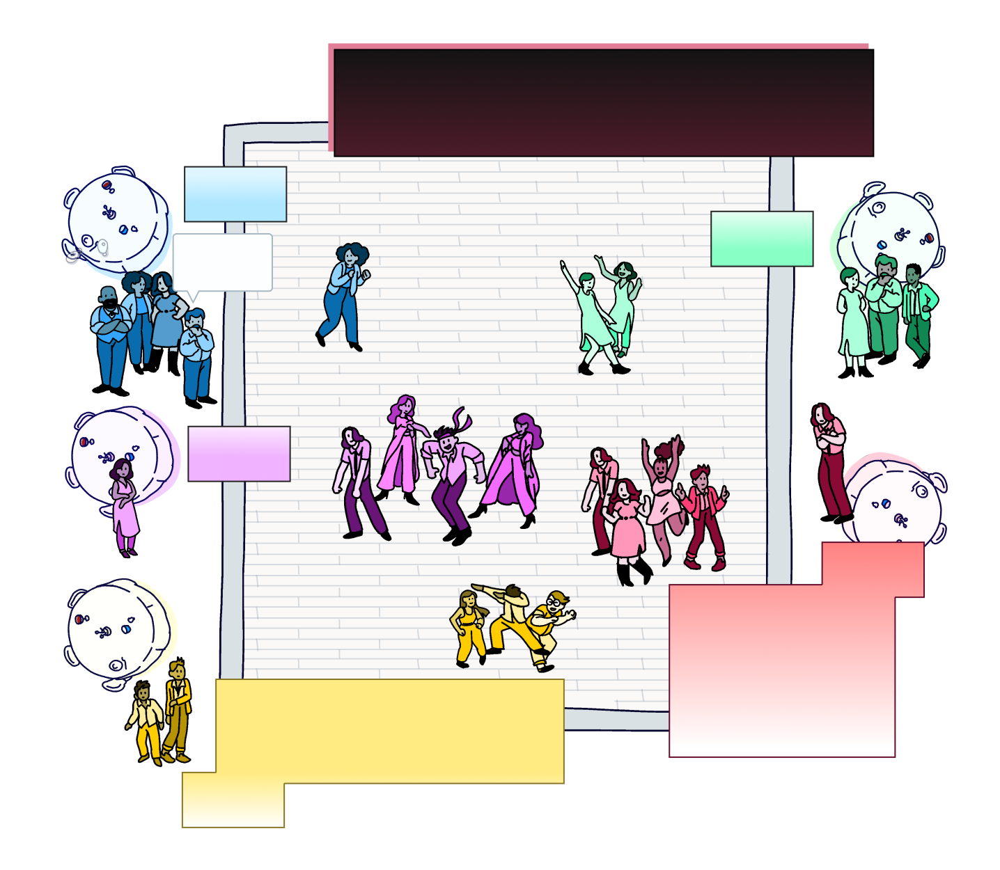
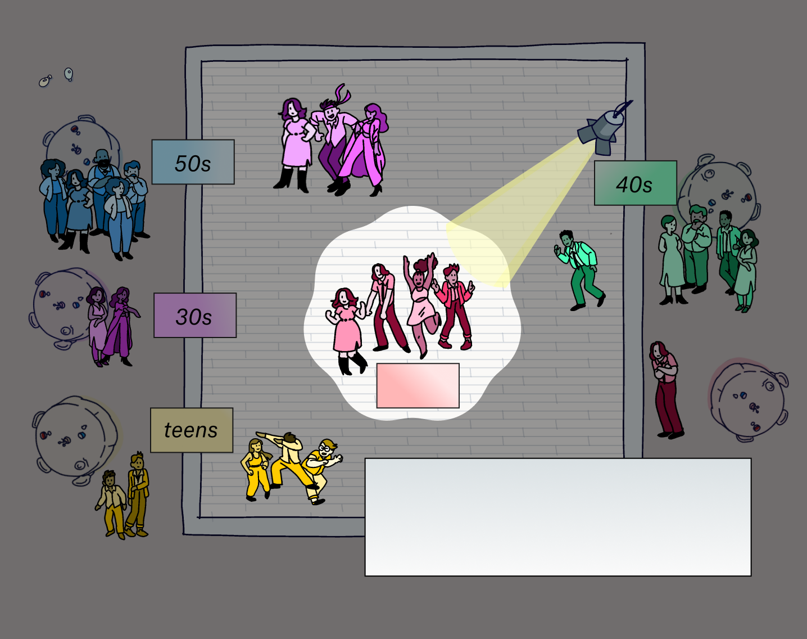
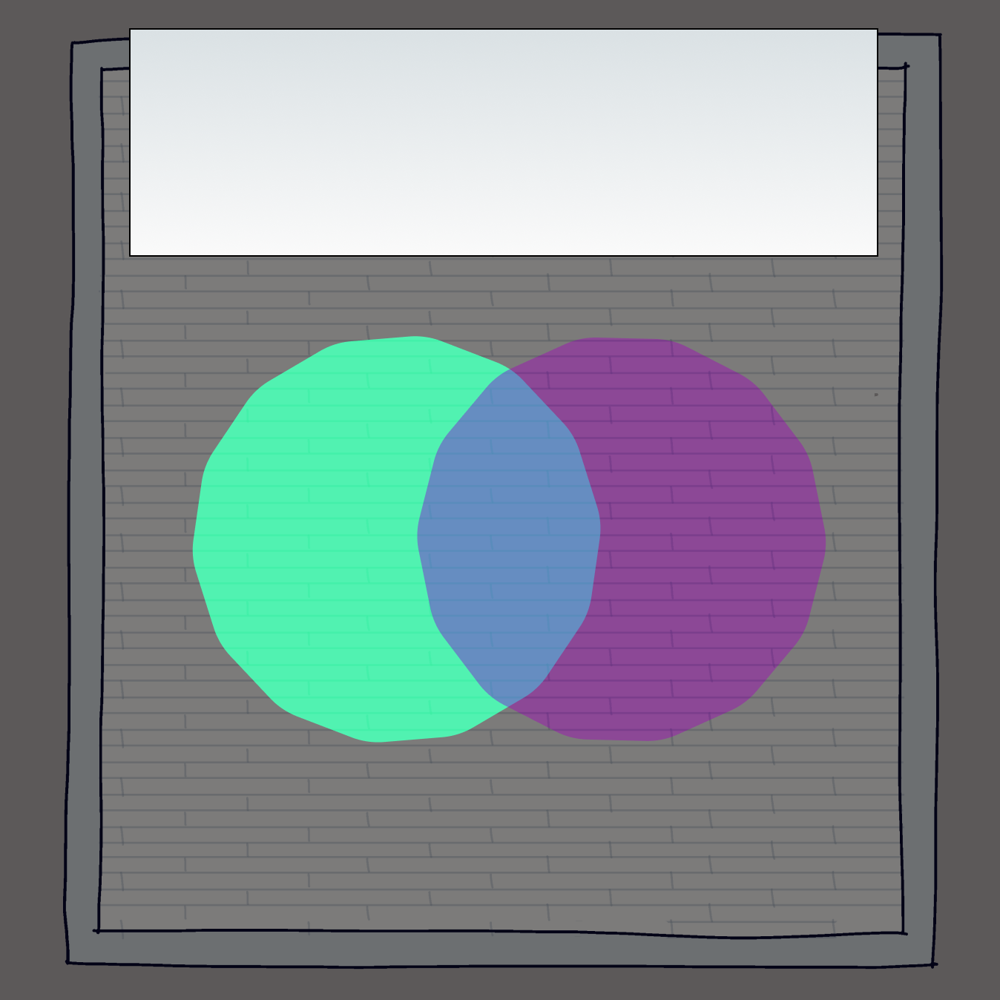
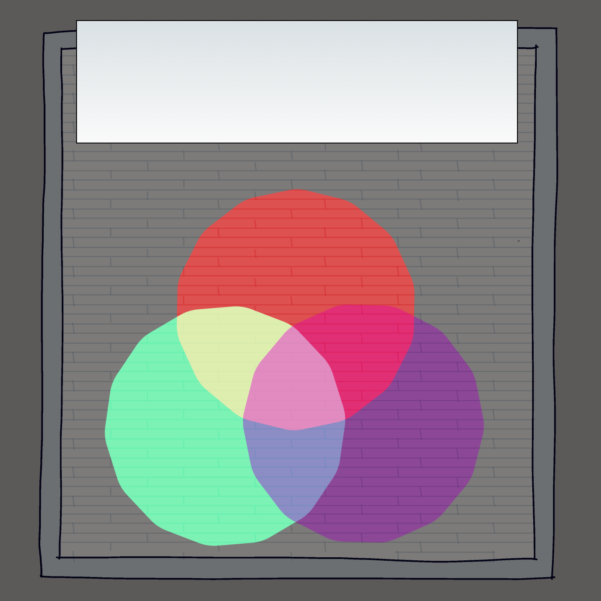

A Data-led Theory to Generationally Divide Dance Floors
This is a hypothetical dance floor.
The crowd on our dance floor is equally distributed by age.

Some age groups are more likely to recognize certain songs than others.
(we collected a 3.5 million data points on what songs people know).
Suppose we play “Stayin’ Alive” by the Bee Gees , a song with almost universal recognition.

Playing “Get Low” by Lil Jon will draw a different crowd.

Play “Smack That” by Akon , released in 2006, and it’s your best shot at isolating people in their 20s.

Play “Cold Hearted” by Paula Abdul , released in 1988, and you can do the same thing for people in their 40s.
What if you needed a song that concentrated the floor with people in their 30s and 40s? There’s a Venn diagram for that.

Adding in people in their 20s and you’re left with a data-led approach to generationally divide (or unify) dance floors.

Words + Data by Matt Daniels. Illustrations by Liana Sposto